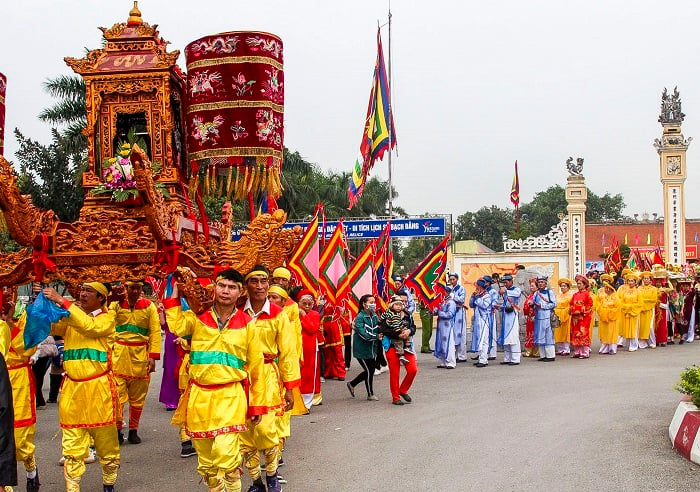

VĂN HÓA & PHONG TỤC
Bản sắc văn hóa độc đáo của cư dân vùng biển Hạ Long
Văn hóa truyền thống Hạ Long
Hạ Long không chỉ nổi tiếng với cảnh quan thiên nhiên hùng vĩ mà còn là nơi lưu giữ những giá trị văn hóa độc đáo của cư dân vùng biển. Với lịch sử lâu đời, nơi đây là sự kết hợp hài hòa giữa văn hóa biển và văn hóa núi, tạo nên một bản sắc riêng biệt.

Làng chài truyền thống
Các làng chài nổi trên vịnh với cuộc sống gắn liền với biển cả, nơi lưu giữ những nghề truyền thống như đánh bắt, nuôi trồng thủy sản.
- Làng chài Cửa Vạn
- Làng chài Ba Hang
- Làng chài Vung Viêng

Lễ hội truyền thống
Các lễ hội đặc sắc phản ánh đời sống tâm linh và văn hóa của cư dân vùng biển, gắn liền với tín ngưỡng thờ cúng cá voi, thần biển.
- Lễ hội Carnaval Hạ Long
- Lễ hội đền Cửa Ông
- Lễ hội chùa Long Tiên
Phong tục tập quán độc đáo
Tín ngưỡng thờ cá Ông
Tín ngưỡng phổ biến của ngư dân vùng biển, thể hiện lòng biết ơn đối với cá voi - loài vật được cho là cứu giúp ngư dân khi gặp nạn trên biển.
Nghi lễ cầu ngư
Nghi lễ truyền thống trước mỗi chuyến ra khơi, cầu mong một mùa đánh bắt bội thu, sóng yên biển lặng, an toàn trở về.
Kiến trúc nhà bè
Kiểu kiến trúc nhà nổi độc đáo của cư dân làng chài, thích nghi với môi trường sống trên mặt nước, di chuyển linh hoạt theo mùa.